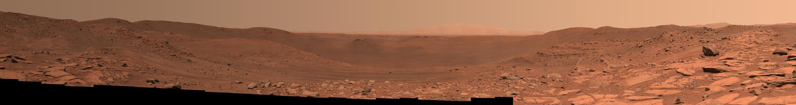
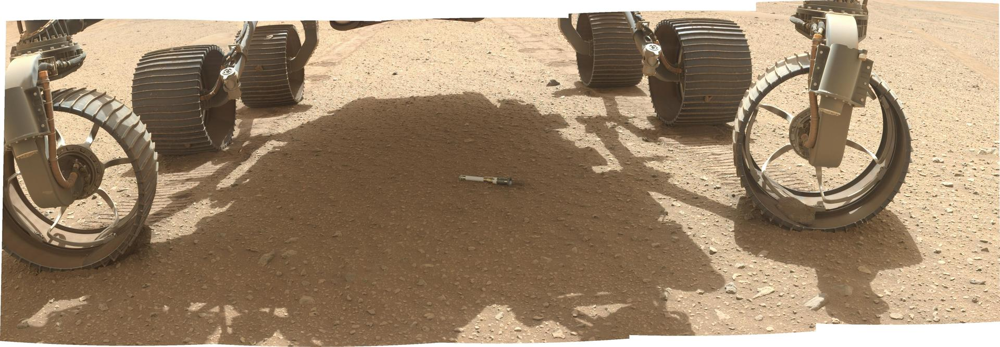

What we built: A web-based tactical mission console for astronauts exploring Jezero Crater on foot or with a pressurized rover. Unlike static orbital maps, Mars Maps couples multi-mission NASA/ESA topography with real xEMU suit physics (oxygen consumption, 20° slope limits, UHF line-of-sight, and NASA DONKI solar radiation).




Spirit was permanently trapped on a high-slip Martian slope. In a pressurized xEMU suit, scarps above 20° risk fatal falls and suit depressurization.
Opportunity was lost to energy exhaustion. Walking on Mars burns up to 90+ kcal/km and requires a mandatory 30% emergency oxygen reserve.
Deep impact craters block UHF radio line-of-sight with the Habitat, while solar CMEs spike radiation from 0.028 to 0.85 mSv/h.

When Ingenuity broke its rotor on Jan 18, 2024, Perseverance could only photograph it from 400m away due to soft dunes.
-
1. NASA Mars Trek WMS & MRO CTX / HiRISE (PIA24096)
5 m/px orbital basemap of Jezero Crater, Viking MDIM2.1 true color & Odyssey THEMIS thermal inertia layer.
trek.nasa.gov • photojournal.jpl.nasa.gov/catalog/PIA24096
-
2. NASA MGS MOLA + Partner Agency ESA Mars Express HRSC
Laser altimetry (-2,650m to -2,250m) fused with ESA HRSC stereo topography for 3D DEM relief & slope limits.
pds-geosciences.wustl.edu/mgs/mgs-m-mola • archives.esac.esa.int/psa
-
3. NASA Perseverance Mastcam-Z & Ingenuity (PIA25734 / PIA26237)
7 local high-res Jezero surface panoramas + Mars 2020 Raw Images API & NASA Image Library REST API.
images.nasa.gov • mars.nasa.gov/mars2020/multimedia/raw-images
-
4. NASA DONKI Space Weather API & Curiosity MSL-RAD
Live solar energetic particle (SEP) & CME alerts (0.028 mSv/h nominal → 0.85 mSv/h storm) with local cache fallback.
api.nasa.gov (DONKI /notifications)
- 1. Suit O₂ Leak (-35% Immediate Tank Drop) Simulates a micrometeoroid suit breach: shrinks the green O₂ ring on the map and triggers an immediate NASA <30% EVA Abort alert.
- 2. Solar CME Storm (0.85 mSv/h • S3 Alert) Injects a coronal mass ejection event: activates red helmet/screen radiation borders and computes shelter ETA (~6 min).
- 3. UHF Comms Loss + Instant Esc Safe Reset Forces A* to reroute via high-ground UHF relay corridors. Pressing Esc restores nominal mission state in 0.2s.
- Photogrammetric DEM + MOLA Hypsometric X-Ray Combines pixel luminance from PIA24096 with Jezero's West Rim, Neretva Delta & Belva Crater; Spacebar triggers HiRISE / THEMIS / CRISM scan.

- 1. Seamless Full-Horizon 360° Panoramas Uses borderless wide Mastcam-Z panoramas (Three Forks PIA25734, Van Zyl PIA24836, Belva PIA25889, Ingenuity PIA26237) plus a dedicated HD Raw Site Photo gallery.
- 2. True Azimuth AR Waypoints & Auto-Orientation Projects neighbor sites at their exact compass bearing (N/NE/E/SE/S/SW/W/NW). Clicking '🎯 Next Stop' smoothly rotates the astronaut's helmet toward the next route node.
- 3. PIXL / SuperCam Laser Readout & Web Audio EVA Click the center reticle to fire a synthesized laser pulse and inspect rock mineralogy (olivine, carbonates, sulfates) while listening to real-time PLSS breathing & Martian wind.
- 1. Key Benefits & What We Aim to Achieve Turns passive planetary maps into a life-saving EVA mission planner for astronauts, mission controllers & STEM students. Our goal is to scale this engine to NASA's Artemis III Lunar South Pole EVAs (swapping R_Mars = 3,396.2 km for R_Moon = 1,737.4 km and LRO LOLA DEMs).
- 2. Mandatory Synthetic Intelligence (AI / SI) Disclosure Transparency Statement: LLM coding assistants were used as pair-programming copilots to accelerate UI styling, bilingual i18n dictionaries, and Three.js boilerplate. Zero NASA logos, flags, or mission insignias were generated or modified; all NASA/ESA images and physical equations are 100% authentic and human-verified.
-
3. Public Links (Verified Logged-Out Access)
🌐 Live Demo App: ortiz10m.github.io/nexo-code-nass/frontend/index.html
💻 GitHub Code: github.com/ortiz10m/nexo-code-nass